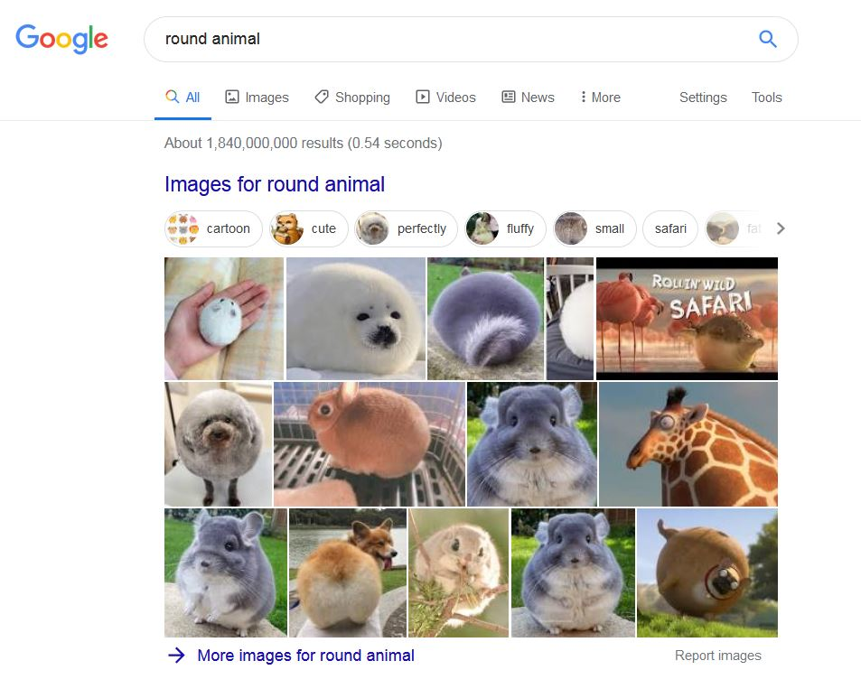
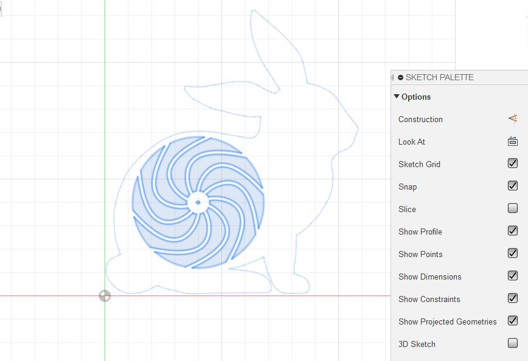
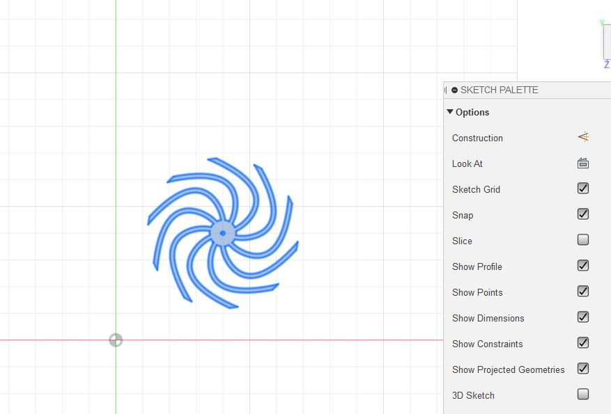
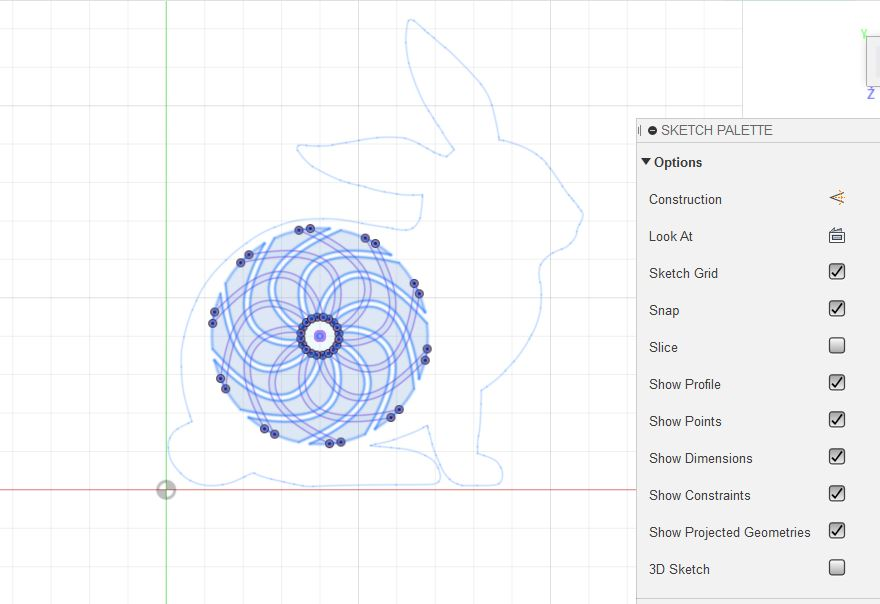
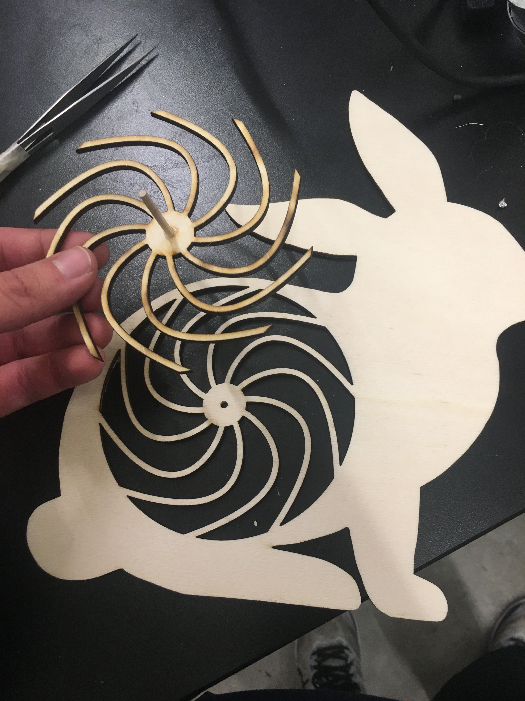

Week 3: Hand Tools & Fabrication
For my project this week, I took inspiration from this video:
I knew that I would need to circumscribe a circle within some kind of animal shape, and that I would want to get the largest circle possible. Initially I tried looking up round animals for inspiration:
However, the identifiability of these search results is pretty heavily dependent on facial features and patterns, but I wanted something that was identifiable by shape. I ended up choosing a rabbit since in my mind they're pretty round animals and are identifiable by silhouette. I found a good rabbit silhouette (pictured below) which I imported into Fusion 360.

I drew a circle in the rabbit to get a sense of how large the spinning section needed to be, and once I figured that out I made a series of arcs within the circle:
After this, I made a reversed version of the inner circle to serve as the portion behind the rabbit that will actually spin:
Here is what they look like overlayed:
I then laser-cut the components out of wood. The holes that I cut out of the centers of the circles were slighly smaller than the smallest wooden dowels in the shop, so I used a power drill to enlarge the holes to the correct sizes so that the dowel would fit through them. I then hot-glued the dowel to the spinning portion while leaving the other hole unattached so that the dowel could spin:
Using a large dowel I made an L-shaped brace to both support the rabbit and the spinning section with its motor (which I attached using hot glue). Here is a video of the final product: